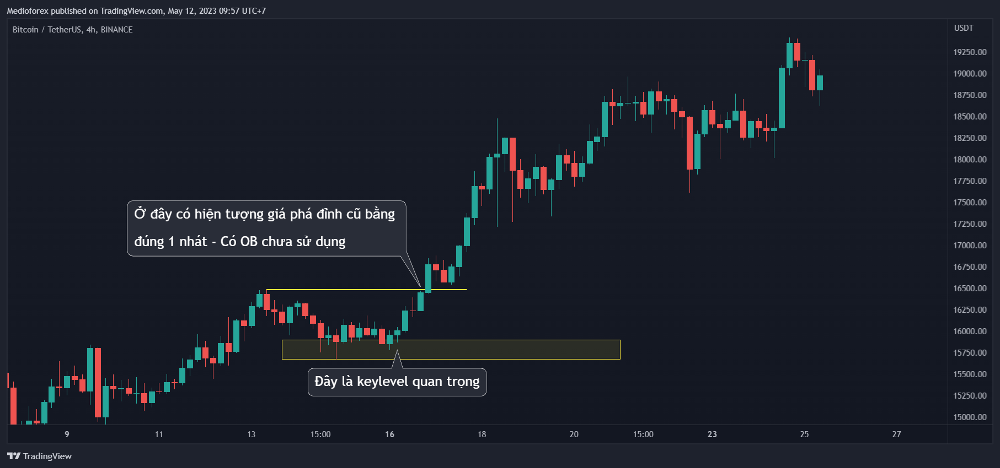
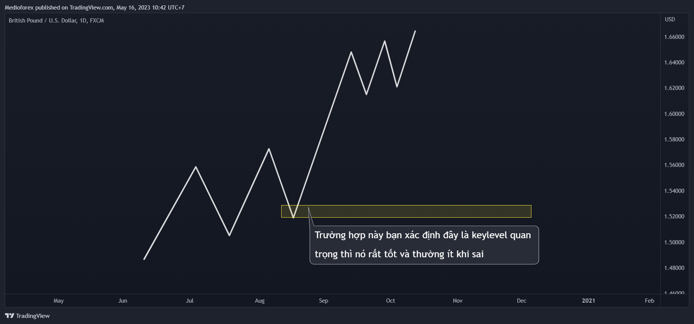
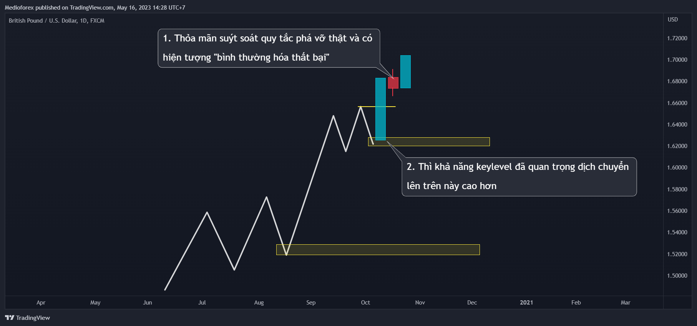

Chào các bạn, đây là bài dành riêng cho keylevel quan trọng được cập nhật năm 2023 từ A-Z mà mình nghĩ sẽ rất cần thiết cho người mới.
Lâu lắm rồi mình không có 1 bài chi tiết về keylevel quan trọng, nên đây sẽ là 1 bài mình cố gắng viết thật chi tiết, kỹ càng, chi tiết hơn nhiều video khóa học nữa. Và nó là 1 bài quan trọng nên đọc cho người mới. Giờ thì vào nội dung chính luôn nhé.
Bắt đầu nhé
I. Ý nghĩa của Keylevel quan trọng và thứ bổ trợ cho nó
-
Keylevel quan trọng từ trước đến giờ thì nó vẫn luôn là cái chính, cái xuyên suốt phương pháp trade của mình.
Đó chính là nơi sẽ đặt lệnh nếu dự đoán xu hướng tiếp diễn hoặc là nơi chờ xác nhận - chờ giá phá qua đó thì vào lệnh. Và khi nhìn vào 1 xu hướng bất kì thì đầu tiên chắc chắn phải xác định keylevel quan trọng. -
OB chưa sử dụng là 1 thứ bổ trợ cho keylevel quan trọng. Có điều từ ngày mình mới thêm cái OB chưa sử dụng vào thì mình nhận được vài phản hồi là nó khó áp dụng, phức tạp hơn trước, trước đang ổn xong thêm cái này vào thì kết quả trade không bằng trước thì đến bài này mong nó sẽ đánh tan cái sự phức tạp đó và nâng kết quả của bạn lên 1 mức mới.
👉 Đừng để cái thuật ngữ nó chi phối góc nhìn vì OB chưa sử dụng với cách mình đang dùng thì căn bản chỉ là để nói đến hiện tượng giá phá 1 cái đỉnh (hoặc đáy) với 1 lực mạnh dứt khoát (phá trong 1 nến) và giá chưa quay trở lại retest cái đỉnh (hoăc đáy) vừa phá.
=> Bạn hãy coi cái “OB chưa sử dụng” là 1 cái thuật ngữ, cái tên để chỉ cái hiện tượng trên. Hiện tượng giá phá 1 cái đỉnh hoặc đáy với 1 lực dứt khoát trong 1 cây nến vậy thôi.
Và cái OB chưa sử dụng - cái hiện tượng đó nó phải nằm ở Keylevel quan trọng thì mới có ý nghĩa chứ nằm ở chỗ khác thì nó không mang nhiều ý nghĩa.
Vậy là Keylevel quan trọng là cái quan trọng nhất và OB chưa sử dụng - hiện tượng phá mạnh đó là cái bổ trợ cho keylevel quan trọng.
Đấy là ý nghĩa của keylevel quan trọng và OB chưa sử dụng cũng như mối liên hệ giữa 2 thằng đó. Giờ nói đến việc xác định nhé
II. Xác định keylevel quan trọng
Trước tiên nói về thằng dễ hơn trước đó là xác định OB chưa sử dụng thì nó chả có gì phải nói cả vì đó là 1 hiện tượng giá phá 1 cái đỉnh hay 1 cái đấy với 1 lực dứt khoát và giá chưa quay trở lại để retest cái đỉnh (đáy) vừa phá thôi.
👉 Cái khó vẫn là xác định keylevel quan trọng.
Muốn xác định keylevel quan trọng tốt thì phải hiểu giá di chuyển như nào mới xác định được, thế thì thị trường sẽ có 2 dạng di chuyển chính:
-
Di chuyển dứt khoát
-
Di chuyển không dứt khoát, nhấp nhả, giật cục ruộng bậc thang
Và keylevel quan trọng được tạo thành từ việc giá di chuyển mạnh dứt khoát.
Đến đây thì lại đặt ra câu hỏi. Thế nào là di chuyển dứt khoát? Thế nào là di chuyển nhấp nhả?
Cái này thì tùy vào đoạn giá bạn muốn nhìn, muốn xem, muốn xét mà nó sẽ có 2 hình dạng nến chính khác nhau trên biểu đồ. Cùng mình làm rõ 2 hình dạng trong đó để hiểu dứt khoát như nào và nhấp nhả bậc thang như nào nhé.
1. Đỉnh đáy dễ nhìn.
Thường với 1 người mới, chưa có nhiều kinh nghiệm thì thường sẽ chú ý vào những cái đỉnh, cái đáy trực quan thấy ngay được như này
Và nhìn vào thì hình dung 1 cái đường giá như này
Giờ mình bỏ qua mấy cái nến cho đỡ rối, chỉ nhìn vào đồ thị giản đơn của đoạn giá trên và xác định keylevel quan trọng nhé

Quay trở lại biểu đồ nến thì ta có

Có hiện tượng giá phá đỉnh bằng đúng 1 nhát, bằng đúng 1 cây nến xanh thân dài, nói ngắn gọn là có OB chưa sử dụng. Nên nếu xác định xu hướng tăng tiếp thì ở trường hợp này có thể limit được luôn
👉 Keylevel quan trọng chỉ cần nhớ : nó là nơi cuối cùng được tạo thành từ việc giá di chuyển phá đỉnh (đáy) mạnh mẽ dứt khoát. Còn giật cục nhấp nhả bậc thang thì không phải.
Một vài dòng có thể khó hình dung nên mình sẽ lấy 1 vài ví dụ để dễ hình dung hơn.
👉 Trade với 1 biểu đồ đỉnh đáy nhìn rõ ràng như trên thì nó có lợi là dễ nhìn cho người mới hơn, an toàn hơn, nhưng đổi lại cơ hội, kèo vào lệnh sẽ ít hơn.
Không phải lúc nào ở keylevel quan trọng cũng có hiện tượng “OB chưa sử dụng”, khi có thì trade ok nhưng khi không có thì sẽ mất 1 số cơ hội hoặc phải đợi chờ có xác nhận lâu hơn vì thế nó mới sinh ra việc nhìn cả ở những trường hợp đỉnh đáy không dễ nhìn.
2. Đỉnh đáy không dễ nhìn
Tại sao phải cố nhìn mấy cái đỉnh đáy không dễ nhìn làm gì, sao không bỏ qua nó, cứ cái gì dễ nhìn thì trade cho nhàn nhã chứ, sao phải tự làm khó mình.
Chính xác, nó đúng, nhưng đến khi giỏi hơn trước thì bạn chắc chắn sẽ muốn giỏi hơn, phát triển hơn nữa chứ không phải dừng ở đó để không bị lỡ nhiều kèo. Và việc tập nhìn những chỗ đỉnh đáy không dễ nhìn theo mình quá trình phát triển tự nhiên thôi. Phát triển để hiểu sâu thị trường hơn.
Mình lấy 1 cái ví dụ như này.
Mình dự đoán được cái xu hướng giảm này còn giảm tiếp và đang tìm cơ hội để vào lệnh bán ở keylevel quan trọng. Nhưng kết quả
Nhưng nếu mình nhìn được những đỉnh đáy không dễ nhìn, vận dụng tốt lý thuyết Dow nữa thì có thể đã vào được 1 cái lệnh như này
Vậy thì tại sao có thể vào lệnh ở đấy? Chỗ đó có phải keylevel quan trọng không thì giờ cùng mình làm rõ nhé.
Đầu tiên là về cách xác định:
Trước tiên vẫn luôn nhớ định nghĩa tổng quát: Keylevel quan trọng là nơi cuối cùng được tạo thành từ việc giá di chuyển phá đỉnh (đáy) mạnh mẽ dứt khoát. Còn việc giá di chuyển giật cục nhấp nhả bậc thang thì không phải.
Từ định nghĩa trên thì hãy suy ra trong việc đọc nến. Mình lấy 1 cái ví dụ cho dễ hình dung nhé
Trường hợp trên giá tạo đỉnh đáy không rõ ràng dễ nhìn, cảm giác nó cứ tăng tằng tằng lên vậy. Nhưng nếu đọc kỹ từng cây nến thì có thể đọc được cấu trúc mà không cần xuống khung thời gian nhỏ hơn.
Việc đọc nến ở những trường hợp không rõ ràng đỉnh đáy và xác định chính xác không phải là dễ, nhìn cái học ngay được. Nó sẽ mất 1 khoảng thời gian để quen với cách nhìn nhưng cái này kiên trì là làm được vì nó không khó.
Ý nghĩa
Những trường hợp đỉnh đáy không dễ nhìn thì chỉ cần xuống khung nhỏ là nó biến thành đỉnh đáy dễ nhìn và từ đấy quy thành trường hợp đỉnh đáy dễ nhìn rồi rồi phân tích bình thường. Hà cớ gì phải nhìn kiểu này cho đau mắt.
👉 Lý do của việc học nhìn những trường hợp này là để bạn có thể đọc thị trường, hiểu cơ bản thị trường chỉ từ 1 timeframe. Vì nếu phải nhìn nhiều timeframe cùng 1 lúc để hiểu thị trường thì ban đầu có thể sẽ khó và bị rối nên càng nhìn ít khung thời gian mà vẫn hiểu được thì càng tốt. Vì thế đôi khi cái khó hơn là con đường để tới được cái dễ hơn.
Từ đây vận dụng lý thuyết Dow vào là trade thôi.
III. Lưu ý
Bên trên mình đã nói về việc xác định keylevel quan trọng rồi. Dựa vào đó thì về cơ bản là đã hiểu cách xác định nhưng khi bắt tay vào biểu đồ thì chắc chắn nó còn nhiều vấn đề khác mà phải có thời gian tự trải nghiệm thì dần dần mới hiểu thêm và dần dần mới xác định tốt và chính xác hơn.
Mình thì không thể lấy tất cả ví dụ và nói cho mọi trường hợp được. Mình chỉ có thể nói những trường hợp lớn, nói về bản chất của nó theo góc nhìn của mình, còn trường hợp nhỏ thì mình đều suy ra từ trường hợp lớn. Cái này thì mỗi người tự trải nghiệm và tạo ra kinh nghiệm cá nhân của mình thôi nhưng trong khuôn khổ của bài này thì mình có 1 lưu ý này để ban đầu bạn xác định tốt hơn, đỡ dính SL hơn.

Nhưng bạn sẽ gặp những trường hợp nó hơi lái sang 1 chút như này
Với người còn ít kinh nghiệm thì rất nhanh cho rằng keylevel quan trọng đã dịch chuyển lên trên khi nó vừa khít thỏa mãn quy tắc phá vỡ thật và sẽ đặt lệnh luôn ở trên đấy.
Thấy keylevel quan trọng đã dịch chuyển lên trên thì đặt lệnh luôn ở đó và có nhiều trường hợp TP nhưng có trường hợp thì dính SL ngay lập tức và khi dính SL cho rằng xu hướng đã đảo chiều nên khả năng sai thêm 1 lệnh nữa.
Nhưng người nhiều kinh nghiệm hơn thì lại ngồi đắn đo vì nó không rõ ràng nên không biết keylevel quan trọng đã dịch chuyển chưa hay vẫn ở dưới từ đó đưa ra hướng xử lý thận trọng hơn.
-
Hỏi: Vậy thì keylevel quan trọng đã dịch chuyển lên trên chưa?
Trả lời: Mình không chắc -
Hỏi: Tại sao thỏa mãn quy tắc phá vỡ thật rồi mà trả lời không chắc?
Trả lời: Mình không biết 😄
Mình đùa chút thôi 😂. Việc gặp những trường hợp mà hình dạng nến nó nằm ở cái khoảng vừa khít cái quy tắc phá vỡ thật mà bảo keylevel quan trọng đã dịch chuyển lên trên thì cũng hơi rủi ro và nó không an toàn bằng trường hợp nhìn rõ mười mươi không cần quy tắc.
Vì thế gặp những trường hợp suýt soát kiểu đó thì mình hay nhìn thật kỹ cái chỗ giá phá đỉnh xem có hiện tượng “bình thường hóa thất bại không”. Nếu có thì mới thêm cơ sở cho rằng keylevel quan trọng khả năng cao đã dịch chuyển lên trên ở những trường hợp phân vân không đẹp.
Nếu bạn không biết hiện tượng “bình thường hóa thất bại” là gì thì hãy đọc 2 bài này: Mưu hèn 9 và Mưu hèn 10

Còn nếu không khả năng nó vẫn chỉ là ruộng bậc thang và keylevel quan trọng vẫn ở dưới. Lúc này hãy cẩn thận
👉 Nói chung khi còn mới thì nên chọn trade ở những trường hợp nó dễ nhìn nhất, còn những trường hợp nó nằm ở khoảng phân vân thì nên thận trọng trong quyết định keylevel quan trọng đã dịch chuyển, nên quan sát kỹ càng, ghi lại tỉ mỉ hình dạng nến để lấy làm kinh nghiệm rồi từ từ tổng hợp chiêm nghiệm sau chứ không nên vội vàng đặt lệnh ở những trường hợp xấu. Làm vậy đảm bảo rất nhanh lên kinh nghiệm.

IV. Tổng kết
Trên là toàn bộ những thứ liên quan đến keylevel quan trọng mà đến giờ mình có thể nghĩ ra, tổng quát lại và nói lại theo mình là dễ hiểu nhất ở thời điểm mình viết bài.
Như bạn cũng thấy là trong hội quán thì mình đã viết rất nhiều series, nhiều bài và mình có xem lại thì nhận ra là, nếu mình hoặc 1 người theo dõi và đọc bài từ những ngày đầu mình viết thì sẽ thấy bình thường không vấn đề gì.
Nhưng để 1 người bắt đầu mày mò trong cái mớ này quả cũng hơi mất thời gian, không biết bài nào trước bài nào sau và nên đọc theo thứ tự nào.
Vì thế phần cuối của bài này mình sẽ nói về thứ tự đọc, cách học theo mình là tinh giản, hiệu quả, đỡ lạc trong này nhất.
V. Hướng dẫn đọc
1. Xương sống
Đây là những bài quan trọng nhất nên đọc đầu tiên và tập trung hiểu đầu tiên. Đây là những bài xương sống mà mình nghĩ tập trung và bám theo nó. Cái này thì chỉ có 4 bài chủ đạo thôi.
-
Bài này: Tổng hợp về keylevel quan trọng từ A-Z năm 2023.
Bài này nên đọc đầu tiên, đây là bài cơ bản và quan trọng không cần giới thiệu nữa rồi. -
Bài: Cấu trúc thị trường và cách thị trường di chuyển.
Đây là bài quan trọng thứ 2 nên đọc. Nó bổ trợ cho bài trên để hiểu thị trường hơn, từ đó xác định keylevel quan trọng tốt hơn. Link ở đây -
Bài vùng đảo chiều xu hướng. Link ở đây
Đây là bài làm rõ hơn cho bài keylevel quan trọng bên trên. -
Bài lý thuyết Dow. Link ở đây và Ở đây nữa
Đây là bài giúp bạn hiểu sự liên kết câu chuyện giữa các khung thời gian và sự tác động giữa câu chuyện khung lớn và khung nhỏ. Nó là kiến thức nền tảng nên đọc.
Trên là 4 bài mình khuyến nghị đọc đầu tiên và tập trung hiểu kỹ nó rồi hẵng đọc bài khác. Nội dung trong những bài này có thể nhắc đến tên bài khác nhưng tạm thời không nên chuyển, cứ đọc kỹ 4 bài đó trước nhé.
2. Xương sườn
Những bài trong mục này có tác dụng là để bổ trợ, hiểu kỹ hơn 4 bài ở trên. Nó là những kinh nghiệm nhỏ xoay quanh 4 bài trên để xác định keylevel quan trọng chính xác hơn, xác định vùng đảo chiều xu hướng chính xác hơn, đọc thị trường tốt hơn để nhìn thấy những cơ hội sớm hơn thôi.
Những bài trong mục này gồm có chuỗi bài: Mưu hèn kế bẩn trading và chuỗi bài Cấu trúc thị trường x OB
3. Còn lại
Còn lại thì là những bài kinh nghiệm cá nhân khác sau khi đã đọc hết những bài trên.
Tổng kết
Mình thì vẫn đang tiếp tục hành trình cố gắng giỏi hơn nữa. Và khi tiếp tục giỏi hơn thì mình lại tiếp tục viết tiếp những bài tốt và dễ hiểu hơn nữa. Mong mọi người tiếp tục đón nhận 😄